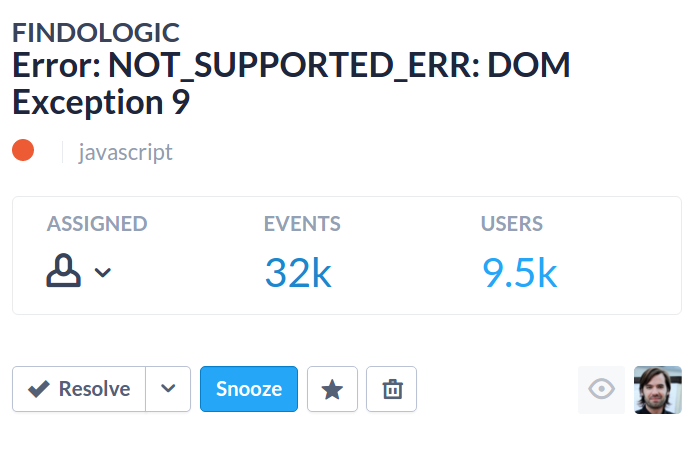

Tracking JS Errors in the Browser using Sentry
#technoburger
What is Sentry?
Basics
- Language-agnostic error tracker
- Semi-automatic grouping of incidents
- Filterable tags
- Ownership through assignment
- Resolve or snooze to mark issues as done
- Easy-to-implement protocol
- Extensive REST API

3rd party service integrations


Hosting
-
getsentry.com
- Small plan starts at 29 USD/month
- 9 USD/month for hobbyists
- I'm not paid to mention that
-
Self-hosted
- 100% open source
- Tricky to set up and scale
- Working Docker image exists, but doesn't scale
Alternatives
- Airbrake
- Track:js (JS-only)
- Raygun
- Errorception (JS-only)
Why we picked Sentry
- Provider-independent through open source
- Reasonable pricing
- Works really well
- Very active ongoing development
- Kickass tech support
Use it!
 JavaScript (Browser)
JavaScript (Browser)
<script src="https://cdn.ravenjs.com/2.3.0/raven.min.js"></script>
<script>
Raven.config('your DSN goes here').install();
</script>
// Log an error manually.
try {
throw new Error('Something went wrong');
} catch (e) {
Raven.captureException(e);
}
 JavaScript (Node)
JavaScript (Node)
$ npm install raven --save
var raven = require('raven');
var client = new raven.Client('your DSN goes here');
// Use Sentry as global error tracker.
client.patchGlobal();
// Log an error manually.
try {
throw new Error('Something went wrong');
} catch (e) {
client.captureException(e);
}
 Ruby
Ruby
$ gem "sentry-raven"
require 'raven'
Raven.configure do |config|
config.dsn = 'your DSN goes here'
end
# Configure Rack to use it (optional; in config.ru).
use Raven::Rack
# Log an exception manually.
begin
1 / 0
rescue ZeroDivisionError => exception
Raven.capture_exception(exception)
end
 PHP
PHP
$ composer require "raven/raven"
// In the autoloader:
require_once '/path/to/Raven/library/Raven/Autoloader.php';
Raven_Autoloader::register();
// In the application:
$client = new Raven_Client('your DSN goes here');
$error_handler = new Raven_ErrorHandler($client);
$error_handler->registerExceptionHandler();
$error_handler->registerErrorHandler();
$error_handler->registerShutdownFunction();
// Log an exception manually.
try {
throw new \Exception('Something went wrong');
} catch (\Exception $e) {
$client->captureException($e);
}
Demo time!
http://is.gd/sentry_meetup
Welcome to the real world
Example issue: IE8 incompatibility
Issue overview

Events over time

How Sentry was great for us
- We found integration problems
- We found a deceptive bug
- Russians still love Windows XP
- We can fix performance issues before things break
- We can prioritize bugs better
Pitfalls
Irrelevant errors - old browsers
Solution: Snooze forever
Irrelevant errors - exotic situations
Solution: Delete/snooze forever
Track only your stuff: Black-/Whitelists
Example:
Raven.config('your DSN goes here', {
ignoreErrors: [/BoringError/],
whitelistUrls: [/\/js\/my-thing\.js/]
}).install();
Be mindful of privacy
- Override the user context
- Use the data scrubber
Conclusion
- Integrating Sentry anywhere is super easy
- Plays well with issue trackers etc.
- White-/Blacklisting errors can be tricky
- Peace of mind after deployments